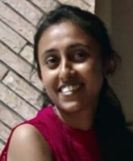

Nirmal Surange
PhD Scholar
Language Technologies Research Center (LTRC)
International Institute of Information Technology, Hyderabad
Research Interests
Natural Language Processing
Text Graphs
NLG Evaluation
Indian Language NLP
Education
PhD in Computer Science
Language Technologies Research Center (LTRC)
International Institute of Information Technology, Hyderabad
Current
M.Phil. in Computer Science
PT. RAVISHANKAR SHUKLA UNIVERSITY, RAIPUR
2009
Master of Computer Application
PT. RAVISHANKAR SHUKLA UNIVERSITY, RAIPUR
2008
Publications
For a complete list of publications, please visit my Google Scholar profile.
Loading publications...
Teaching Experience
TEACHING ASSISTANT, IIIT-Hyderabad
- Natural Language Processing, Head TA (M-2018)
- Advanced Operating System, Head TA (M-2018)
INSTRUCTOR, LTRC, IIIT-Hyderabad
- BASIC MATHEMATICS - 1 (MONSOON 2017-2018)
- BASIC MATHEMATICS - 2 (SPRING 2018-2019)
LECTURER, NIT Raipur
- Operating System, and C++ (JANUARY 2013 - MAY 2014)
- Intro to IT, C (JULY 2010 - MAY 2011)
Awards & Scholarships
UGC-NET JRF
2014-2019
Contact
nirmal.surange@research.iiit.ac.in
Language Technologies Research Center (LTRC)
International Institute of Information Technology, Hyderabad